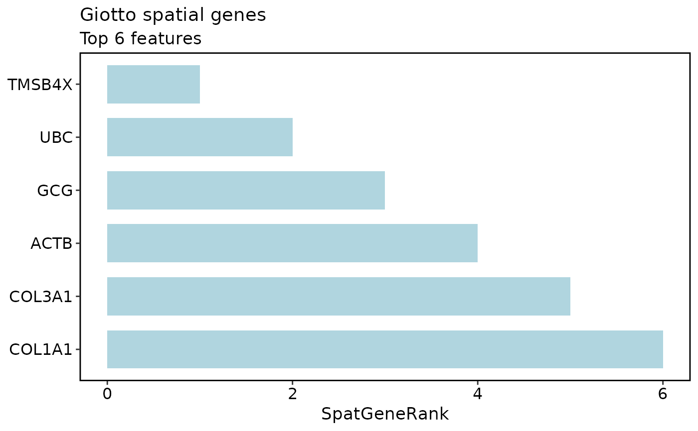

Run Giotto spatial gene detection
Arguments
- x
A `giotto2` workflow object.
- features
Features to test.
- network_method
Spatial network method.
- network_name
Name for the Giotto spatial network.
- bin_method
Binarization method passed to `Giotto::binSpect()`.
- top_n
Number of top spatial genes to store.
- params
Additional parameters passed to `Giotto::binSpect()`.
- verbose
Whether to print progress messages.
- seed
Random seed for reproducible Giotto calls.
Examples
data(visium_human_pancreas_sub)
spatial <- visium_human_pancreas_sub
coords <- data.frame(
cell_ID = colnames(spatial),
sdimx = spatial$x,
sdimy = spatial$y,
row.names = colnames(spatial)
)
spatial_gene_table <- data.frame(
feat_ID = rownames(spatial)[1:8],
spatGeneRank = seq_len(8),
adj.p.value = seq(0.001, 0.04, length.out = 8)
)
g <- structure(
list(
source = list(cells = colnames(spatial), coordinates = coords),
results = list(
spatial_genes = list(
table = spatial_gene_table,
top_features = spatial_gene_table$feat_ID
)
)
),
class = c("giotto2", "list")
)
GiottoPlot(g, plot_type = "spatial_genes", top_n = 6)

if (
isTRUE(check_r("giotto-suite/Giotto", verbose = FALSE))
) {
g <- SeuratToScopGiotto(spatial, coord.cols = c("x", "y"))
g <- GiottoPreprocess(g)
g <- GiottoSpatialNetwork(g)
g <- GiottoSpatialGenes(g, features = rownames(spatial)[1:50], top_n = 10)
}
#> Error in check_r("giotto-suite/Giotto", verbose = FALSE): could not find function "check_r"